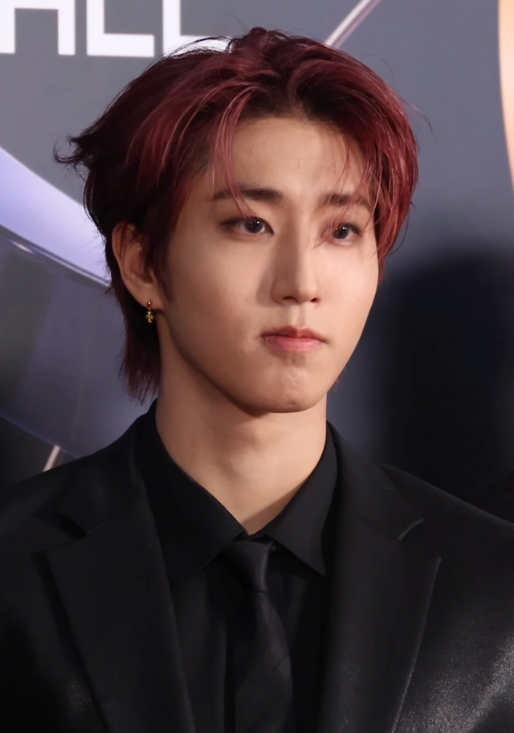

Name: Han Ji-sung AKA HAN (3racha name: J.ONE)
Birthday: 14 September 2000
Age: 25
MBTI: ISTP-T
SKZOO: HAN Quokka
Roles in stray kids: Main rapper, lead vocalist, songwriter, and producer.
Rachas: 3RACHA, PaboRacha, and SunshineRacha.
Story: Han was born in Incheon, South Korea, but spent much of his childhood in Malaysia before returning to Korea to pursue music. He joined JYPE in 2015. As the third member of 3RACHA, he is a "musical ace" known for his incredible versatility as both a main rapper and a powerhouse vocalist. He is famous for his "quokka" visuals and his ability to write lyrics at lightning speed, often finishing songs in just a few hours. Despite his loud and energetic personality on camera, he is quite introverted and has been open about his journey with social anxiety, becoming a source of comfort for fans. Whether he’s hitting high notes or delivering fast-paced rap verses, he is a central pillar of the Stray Kids sound.
Facts: Han is known as the "triple threat" of Stray Kids, his famous for writing lyrics incredibly fast sometime finishing a whole song in under two hours. Fans call him Quokka because of his big cheeks. He has an older brother and a pet dog named Bbama.